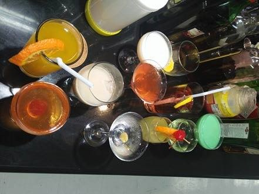

Bartending
Food and Beverage Services is one of the specialization under the TVE-Home Economics taught in the 2nd Semester for Grade 11 students.
This course is designed for a high school student to develop the knowledge, skills and attitude to perform the tasks required by the food and beverage services.
It covers the core competencies of:
1. Planning the food and beverage program of clients
2. providing preliminary services to clients
3. applying food and beverages techniques and
4. providing advice on food and beverage services.
College Courses
- BS Hotel and Restaurant Management
- BS Culinary Mangement
- BS Home Economics
- Food and Beverage Service
Program
- Front Office Services NC II
- Tour Guiding Services
- Travel Services NC II
Career Opportunities
- Restaurant Supervisor Manager, Cook